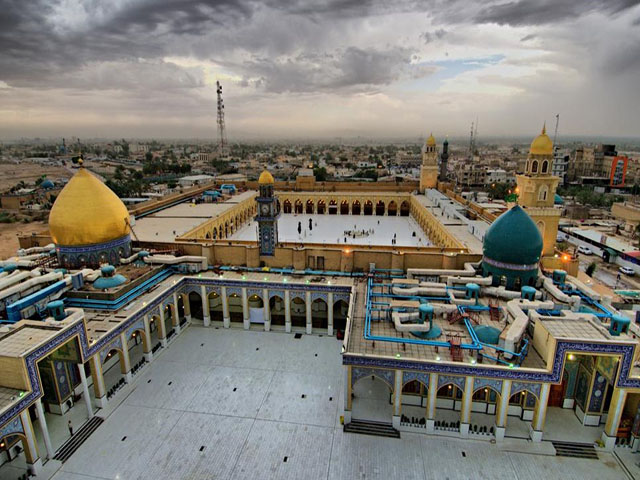
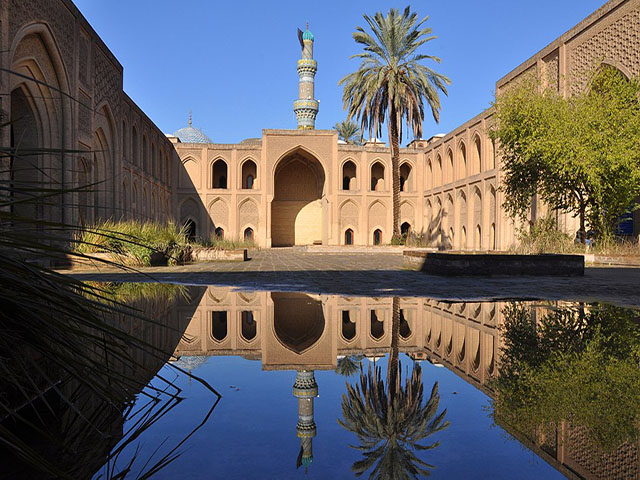

Ancient Iraq
"A great civilization that grew between the Tigris and Euphrates rivers and depended on them for life and farming"
- King:Sargon of Akkad - founder of the first empire in history
- Rule:The king was the representative of the gods and the enforcer of justice on earth
- Writing 𒂗:Cuneiform (wedge-shaped signs on clay tablets)
- Medium:Clay tablets
- Belief ⚱:Multiple gods, the afterlife as a dark underworld, and protection through talismans
- Famous ▲:The Ziggurat of Ur and the Hanging Gardens of Babylon
- Science:Invented the wheel, the 60-minute hour, the first laws (Code of Hammurabi), and advanced mathematics
 Al-Hadar
Al-Hadar
Hadar is an ancient city in Iraq. It was built by the Seleucids between the 2nd and 3rd centuries BC. Hatra was inscribed on the UNESCO World Heritage List in 1985.
Details → Ziggurat of Ur
Ziggurat of Ur
Ur is an archaeological site and ancient Sumerian city located at Tell al-Muqayyar in southern Iraq. The site dates back to the Ubaid period, around 3800 BCE.
Details → Samarra city
Samarra city
Samarra is a city in Iraq, located east of the Tigris River in the Salah ad-Din Governorate.
Details → Ctesiphon
Ctesiphon
Ctesiphon, also known as al-Mada'in, was an ancient city and capital of the Parthian and Sasanian Persian dynasties
Details → Ashur
Ashur
Ashur, also known as Sharqat Castle, is an ancient city dating back to the Neo-Assyrian Empire. The ruins of this archaeological site are located west of the Tigris River in the Salah ad-Din Governorate of Iraq.
Details → Al-Asafiya Mosque
Al-Asafiya Mosque
Al-Asafiya Mosque is an Islamic complex comprising a mosque and a madrasa (religious school) located in Baghdad, the capital of Iraq. The mosque was founded during the Ottoman era in 1596 CE and renovated by the governor of Baghdad, Daoud Pasha, in 1826 CE.
Details → Najaf al-Ashraf
Najaf al-Ashraf
Najaf, or Najaf al-Ashraf, is a historic city and the capital of Najaf Governorate, located southwest of Baghdad, the capital of Iraq. The city was founded in 791 CE during the reign of the Abbasid Caliph Harun al-Rashid with the construction of the shrine of Imam Ali (peace be upon him)
Details →
Mosque of KufaThe Great Mosque of Kufa is a historical mosque located in the city of Kufa, Iraq. It was built in 639 CE by the companion of the Prophet, Sa'd ibn Abi Waqqas, during the reign of the Rashidun Caliph Umar ibn al-Khattab.
Details →
Al-Mustansiriya SchoolAl-Mustansiriya School is a prestigious school founded during the Abbasid Caliphate in Baghdad in 1227 CE by Caliph Al-Mansur Al-Mustansir Billah. It was an important scientific and cultural center. It is located in the Al-Rusafa district of Baghdad, Iraq.
Details → Book a visit
Book a visit
Book your ticket now and enjoy an unforgettable experience
 open daily
open daily
8:00AM
to
6:00PM
 Ticket price
Ticket price
5,000 IQD